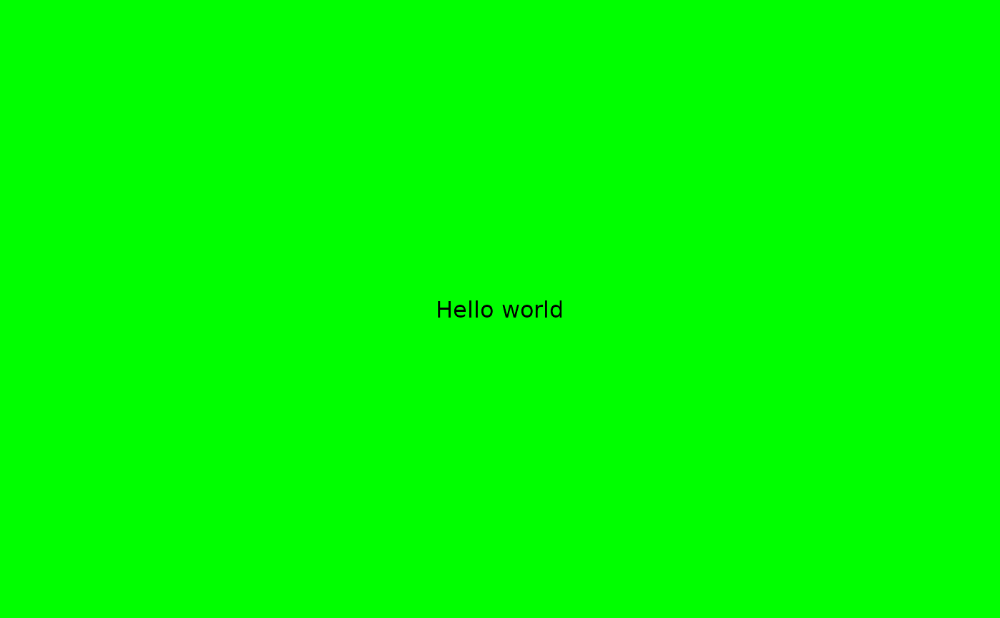

For plot types that don't have a special print method, use this function to capture what has been printed to the current graphics device and save it using the current camcorder settings
Value
No return value. Used for the side effect of capturing the current graphics device and saving it to the set directory from gg_record.
Examples
library(grid)
gg_record(device = "png", width = 10, height = 8, units = "in", dpi = 320)
## make a plot using grobs
grid.draw(rectGrob(width = 2, height = 2, gp = gpar(fill = "green")))
grid.draw(textGrob("Hello world"))

record_polaroid()
gg_stop_recording()
#> Warning: S3 method ‘print.ggplot’ was declared but not found